I design health and fun experiences around the people who use them, combining a background in Biomedical Sciences and Public Health with human-centred design.
Porto, Portugal
What I do
User Research
Interviews, surveys, co-design sessions and literature reviews
Design Insights
Personas, design requirements, user journeys, prototypes and usability testing
Product Collaboration
Turning user needs into tickets and clear requirements for development teams
Case Studies
Erasmus+ · 2025–2026
Ikigai Play Toolkit
A ludic toolkit that builds digital health literacy among older adults, developed by a European consortium across 8 countries. I worked on the literature review, design requirements and activity design, and took part in the pilot evaluation (318 questionnaires).
UX Researcher · Erasmus+ project
Read case study
Academic · 2025
MotivaMed
An app concept that helps people stay on track with their medication by adapting to their routine and what motivates them. Survey with 106 respondents, competitive benchmark and high-fidelity prototype.
Market research & prototype design · Academic project
Read case study
Product · 2024–2025
TikTests
Redesign of a personal colour analysis platform, from user research to launch at Web Summit Lisbon 2025.
Combatendo a mpox na era digital: um mapeamento sistemático de aplicativos móveis de saúde no Brasil
Extended abstract · 1st International Digital Health Meeting (Fiocruz Ceará) · Revista de Saúde Digital e Tecnologias Educacionais (2025) · First author
Designing a ludic intervention to build digital health literacy among older adults across Europe
In short: Older adults are being left behind as healthcare goes digital. As part of a European Erasmus+ consortium, I helped research, design and test a toolkit of playful activities that builds digital and health skills, and learned that the best way to teach digital skills to this audience was not a digital product.
Role: UX Researcher (Master's research in Public Health) Project: SMARTageCARE, Erasmus+ (9 partners, 8 European countries), coordinated by the University of Porto (FBAUP) Timeline: Jan 2025 – Aug 2026 Methods: Literature review, affinity mapping, surveys, personas & scenarios, design requirements, brainstorming, pilot evaluation Outcome: Final toolkit of 38 activities, a co-authored book chapter (IGI Global, 2026) and a conference paper (ArtsIT, 2026)
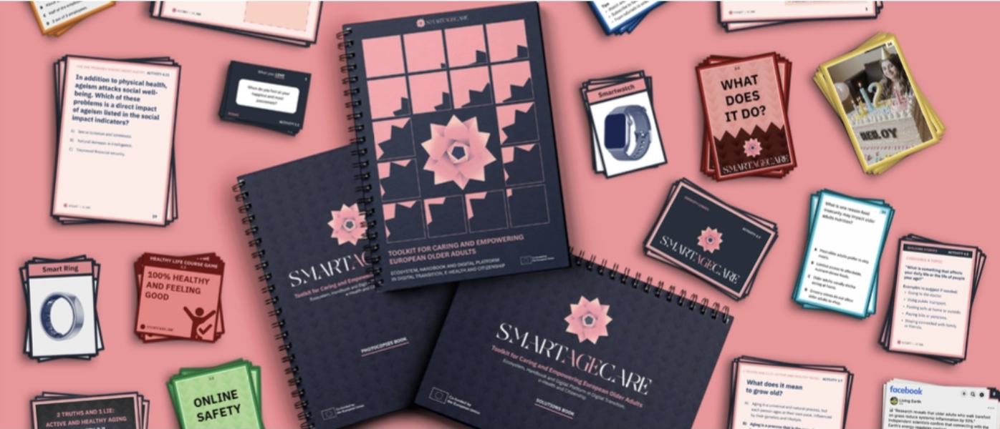
The problem
Health services across Europe are moving online: appointments, test results, prescriptions, teleconsultations. For many older adults, this turns digital skills into a condition for accessing care.
Most existing digital literacy programmes are designed for older adults rather than with them, and focus on technical skills while ignoring what keeps people engaged: motivation, confidence and fear of making mistakes.
The question: how might we help older adults across very different European contexts build digital health skills in a way that feels meaningful, safe and fun?
My role
I was part of the design team at the University of Porto (FBAUP), which led the toolkit's development for the whole consortium. My contributions:
Research: collaborated on the literature review that grounded the toolkit (published as a book chapter)
Requirements: created the 7 design requirements that guided prototyping (published as a conference paper)
Design: contributed to several of the toolkit's activities and led the design of 10 of them
Testing: took part in the co-design and pilot sessions in Portugal and applied the evaluation questionnaire to participants
Dissemination: presented the toolkit at project events (Portugal and Belgium)
1. Discover: understanding older adults in 8 countries
Participatory workshops. Local partners ran co-creation workshops with 96 "Senior Ambassadors" (aged 65+) in 8 countries. Using affinity mapping, participants named their own problems and solutions, generating 268 pain points and 272 solutions across three themes: digital transition, eHealth and citizenship.
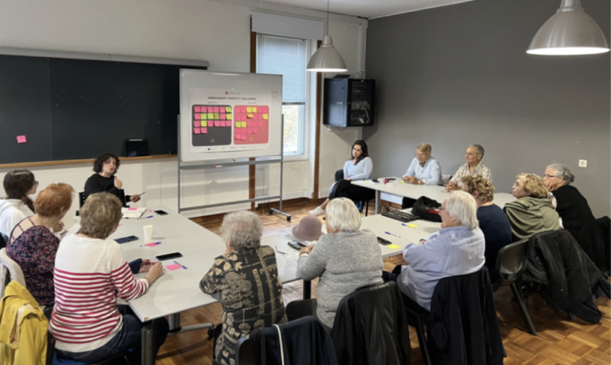
Affinity mapping session in Portugal
Technology use survey (n=57). It showed a clear pattern:
93% use their smartphone for calls, but struggle with anything beyond that, such as installing apps or using social media
They recognised on average only 4.8 out of 10 common app icons
26% reported a general fear of their phone, mostly driven by fear of scams and fraud
Literature review. The consortium screened 330 studies and selected 168 to map each country's context and the evidence behind the Ikigai philosophy (the Japanese concept of "a reason for being"), which research links to wellbeing and social participation in later life.
Key insight: the problem was not a lack of digital tools. It was a mismatch between the tools available and older adults' abilities, motivations and contexts. Fear of making mistakes was as big a barrier as missing skills.
2. Define: personas and design requirements
The design team turned the findings into 4 personas with usage scenarios, one for each theme (digital transition, eHealth, citizenship) plus one for the facilitator who runs the sessions. They gave a team spread across 8 countries a shared reference point for design decisions.
Below there is an one of the 4 personas and scenarios created related to e-health axis
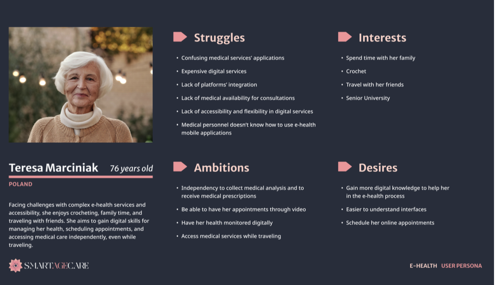
One of the 4 personas: Teresa Marciniak, e-health axis
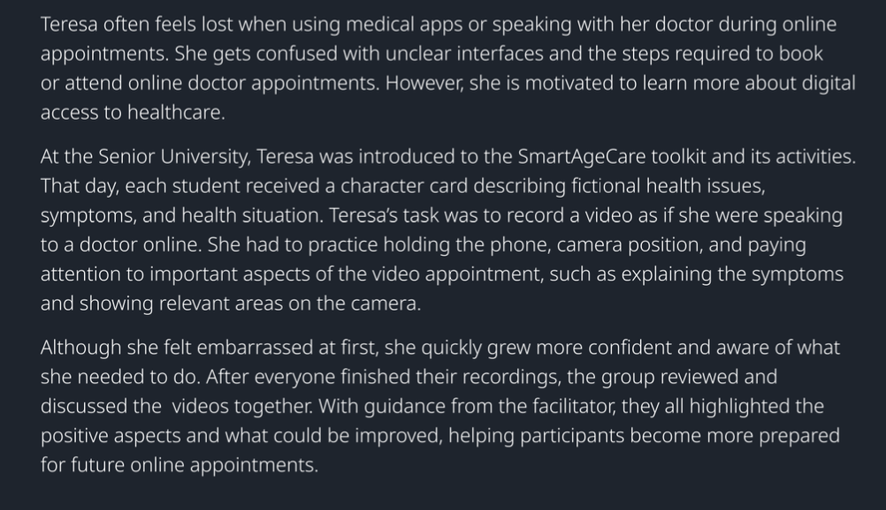
Teresa's usage scenario with the toolkit
I then contributed to defining 7 design requirements, that combine the finds from discovery phase and the Ikigai philosophy with positive play framework which bridged the research and the prototyping:
Utility, simplicity and adaptability: activities should feel useful and intuitive, and adapt to each person's needs and goals
Progress visualisation and tracking: users should be able to see their progress and reflect on it
A safe space to experiment and learn: mistakes are treated as learning opportunities, to build confidence step by step
Integration with daily routines: activities should connect to everyday life and support lasting habits
Flow and challenge balance: difficulty should match each person's skills, avoiding both frustration and boredom
Safe simulation of digital risks: scenarios such as misinformation or online fraud are practised in a controlled, guided setting
Content relevant to older adults and caregivers: content should also speak to their support networks, strengthening social connection
Analogue, not digital. A purely digital tool would have reproduced the very barrier we were trying to remove, especially for the 26% who feared their device. The toolkit became a physical kit (card sets, a facilitator manual, a solutions book and printable materials) that brings real smartphones in only where needed.
Modular, not a single game. The first idea was one serious game. The diversity found in the workshops pointed instead to 43 activities across 4 modules (Ikigai, Digital Transition, eHealth, Citizenship) that facilitators can combine for their group.
Motivation first. Grounded in Ikigai and the Positive Play framework, the toolkit treats digital tools as a means to reach personal goals, not as an end in themselves.
Accessible by design. High-legibility typography and high-contrast colour palettes throughout.
Activities I designed
I created more than 10 activities across the toolkit. These are the four I led from concept to final version:
Digital Health Detectives: fights online health misinformation using prebunking, where people learn to resist manipulation by seeing weakened examples of it first. I built realistic email, Facebook and WhatsApp mockups featuring common tactics such as emotional appeals and fake authority, informed by the survey data.
Wearables in Elderly Health Care: introduces 10 wearable devices for health monitoring, activity tracking and emergency assistance.
You Are Probably Wrong About Ageism and …About Elder Abuse: myth-busting quizzes adapted from Gapminder's method, built on WHO and European data. Because of the sensitive topic, the elder abuse activity includes support materials and local help resources.
4. Test: pilot in Portugal, Italy and Poland
The toolkit was piloted with older adults in three countries chosen for their different digital and social contexts. After each activity, participants answered a short questionnaire based on game usability heuristics (PLAY). In total, 318 questionnaires were collected across four dimensions (scale 1–5):
4.29
Performance
4.01
Perceived effectiveness
3.94
Efficiency
3.79
Usability
What we learned:
People engaged, but the mechanics were the weak spot. Participants completed tasks and felt safe, but abstract rules confused them. For example, sorting cards to simulate a phone screen didn't work.
Real beats simulated. Hands-on use of real devices and scam stories from participants' own lives worked far better than fictional scenarios.
Relevance depends on context. Each country rated a different module highest, which supported the modular structure.
The facilitator matters. Sessions flowed only when facilitators adapted activities to very mixed groups, from people who had never used a smartphone to people already using AI tools.
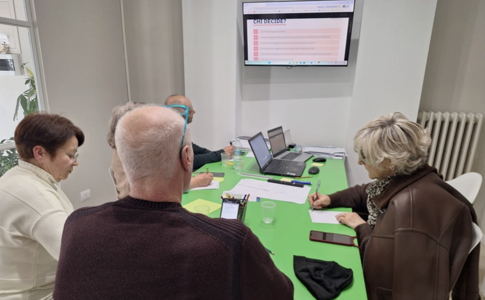
Pilot sessions in Italy
5. Iterate: refining the toolkit
The most important finding was one we didn't expect: competitive game mechanics that penalised health events felt stigmatising. Losing points because of an illness meant scoring someone's own life story. We removed them and refocused the eHealth module on private self-assessment and peer dialogue.
Overall, 5 activities were removed, giving a final version of 38 activities, now publicly available on the project website.
Outcome
Final Ikigai Play Toolkit published for use in care homes, day centres, senior universities and community groups
Book chapter: Ikigai Play: Towards an Ikigai Paradigm of Healthy and Active Ageing in Europe (IGI Global, 2026)
Conference paper on the design requirements (ArtsIT, 2026)
My Master's dissertation, documenting the full design process and my contributions
What I'd do differently
Involve older adults in every phase. They shaped the discovery and testing phases, but ideation and prototyping were done by the team. Co-designing the activities with them could have caught issues like the stigmatising mechanics earlier.
Measure learning, not just reactions. The pilot captured how people felt right after each activity. A before-and-after design with a validated digital health literacy scale would show whether skills actually improved.
Design for the facilitator from day one. The toolkit only works with good facilitation, so facilitator training deserves the same design attention as the activities.
Rethinking medication adherence: from "when to take it" to "why it matters"
In Portugal, up to half of people with chronic conditions don't take their medication as prescribed. Most apps focus on reminders and tracking. MotivaMed asks a different question: what if the app also helped people understand why their medication matters to them?
Role: Market research & prototype design Context: Digital Health Course, ICBAS & FFUP (University of Porto) Team: 4 Master's students Methods: Competitive benchmark, online survey (n=106), high-fidelity prototyping (Figma) Outcome: High-fidelity prototype + full concept pitch
The problem
An estimated 200,000 deaths and €125 billion in costs per year in Europe are linked to medication non-adherence. In Portugal, roughly half of people with chronic conditions don't take their medication as prescribed.
Most existing apps treat adherence as a logistics problem: set a reminder, check a box. But research shows that how people feel about their treatment, whether they understand it, and whether it fits their life, matters just as much as remembering the dose.
My role
Market research: competitive analysis of 5 apps and an online survey (n=106) about medication habits and attitudes toward digital health tools
Prototype: I designed the high-fidelity prototype in Figma, translating research findings into the interface, interactions and visual identity
1. Research
Competitive benchmark
We reviewed five medication apps (MyTherapy, Medisafe, PillsTime, CareClinic and Mediteo) and found:
Little personalisation, which leads people to give up
Poor usability for older adults, who are often the ones taking the most medication
Survey (n=106)
We ran an anonymous, GDPR-compliant survey in Portugal about difficulties with medication and interest in a digital solution.
63% take medication regularly, and another 11% used to
About 40% struggle to follow their medication at least sometimes
Forgetting was by far the main reason (71% of those who struggle), followed by a routine that doesn't fit the medication schedule (10%)
65% rated a personalised app as useful (4–5 on a 5-point scale)
44% would find access to a professional (e.g. a pharmacist) very useful, and another 43% would consider it depending on cost
What people valued most in a digital solution:
Feature
%
Personalised reminders
76%
Clear, simple information
48%
Contact with a health professional
44%
Symptom and side-effect tracking
41%
Adapting to my daily routine
37%
Motivational or emotional support
18%
Open answers added nuance: reminders showing a photo or the name of each medication (suggested by a pharmacy technician, thinking of older polymedicated patients), integration with the national health service app for prescription renewal (SNS24), support for tapering off medication, and some scepticism: "All people need is more useless apps and digital dependency…"
2. Design
Personalisation starts at onboarding
Instead of only asking for a list of medications, onboarding gets to know the person:
About you: basic profile and routine
Daily inspiration:"What inspires you to take care of your health?" (family, independence, quality of life…)
Add medications: manually, or by scanning the packaging with the camera
Motivation style: how they prefer to be encouraged, and the tone of voice they want
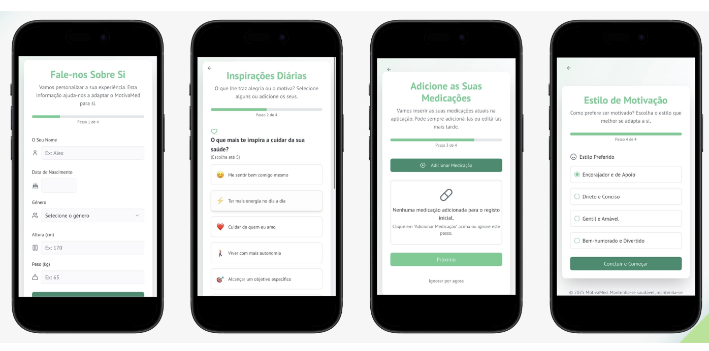
A companion, not just an alarm
Daily personalised message connected to what motivates the user
Today's medications at a glance
MotivaAI, an AI assistant for questions about the medication routine (with health disclaimers)
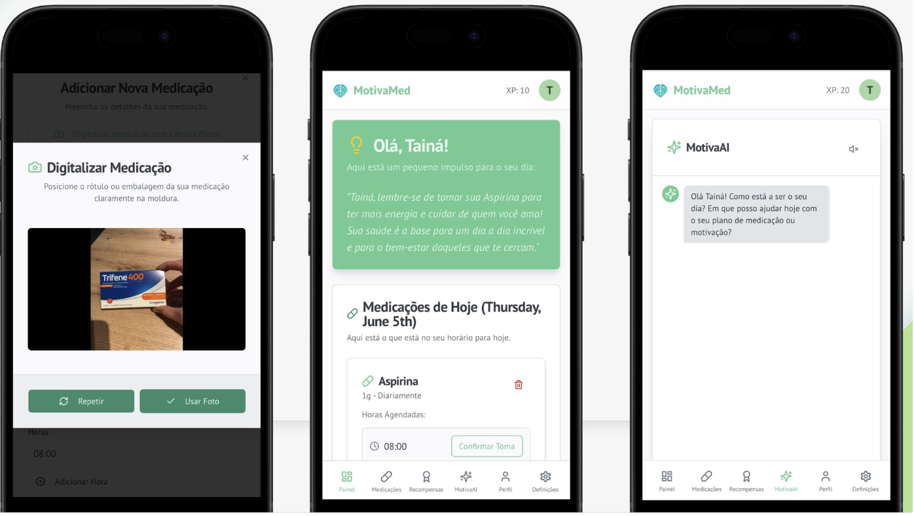
Light gamification
Each dose taken earns points, which unlock badges, app themes and a companion (a seed that grows with consistent use). The goal was to make progress visible and rewarding without feeling childish.
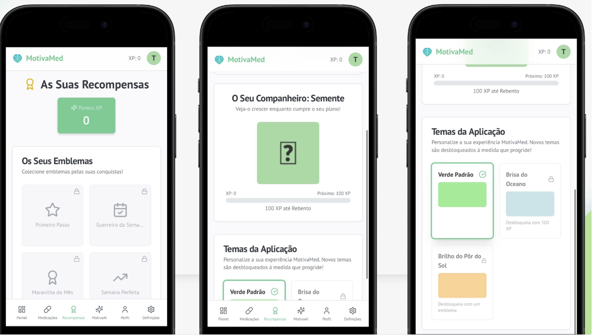
Outcome
High-fidelity prototype covering onboarding, the daily routine, medication scanning, an AI assistant and gamification
Full concept presented in a final pitch, including market analysis and business model
What I'd do differently
Survey the people we design for. 72% of respondents were aged 18–34 and almost half had a health background, while the app targets people with chronic conditions, including older adults taking several medications. I'd recruit through pharmacies, clinics and senior associations.
Follow the data, even when it challenges the idea. Respondents valued personalised reminders (76%) and clear information (48%) most, while motivational support came last (18%). Our concept was built around motivation. I'd make reminders and clarity the core, and treat motivation as a hypothesis to test.
Test the prototype with users. The project ended at the prototype stage. Usability testing, especially with older adults, would be the next step. My later work on the SMARTageCARE project showed that game mechanics can feel patronising or stigmatising in health contexts, so I'd test the gamification carefully.
Consider fitting into existing tools. Some respondents didn't want another app. Integration with platforms people already use, such as SNS24, could lower the barrier to adoption.
Role: Product Owner & UX Researcher · Timeline: Apr 2024 – Nov 2025 Methods: in-product survey (n=84) · user interviews (n=2) · competitive benchmarking (10 products) · personas · Value Proposition Canvas · sitemap & user flows
TikTests is a Brazilian web app that finds your personal colour palette from a selfie. Users liked the test (86% rated it 4 or 5 out of 5), but the result stopped at "these are your colours". Research showed people wanted to know how to use them: 80% asked for practical tips. I led the discovery that rebuilt the result around everyday use, shaped a freemium/premium model, and fed into the new version launched at Web Summit Lisbon 2025.
Context
TikTests had a working free test and a large audience: about 336k active users, mostly in Brazil (~319k), followed by Portugal (~9.5k) and the US (~4.3k). But the team was restructuring the product and needed to decide what to build next. My role was to find out who our users were, what they valued, and where the experience fell short, and then turn that into product decisions and backlog priorities.
Where we started
The old home page was a stack of test cards ("Deixa com o Tik", "Colorimetria"…) with a call to action on each. It never explained what TikTests was, how the test worked or why anyone should trust it. Users had to jump straight into a test.
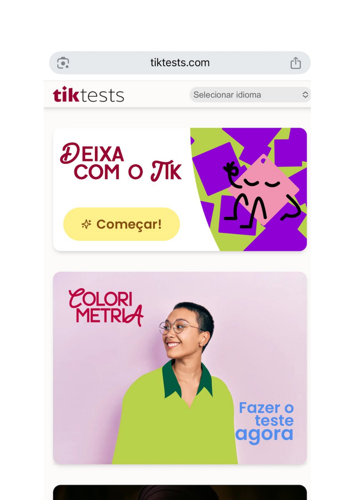
Research questions
Why do people look for personal colour analysis, and what brings them to TikTests?
How do they experience the current test: what works, and what frustrates them?
What would make the result more useful, and is there real value in a paid version?
Approach
1. Heatmap analysis
12 months of interaction data, Hotjar. My first step was to look at what users actually did on the test page before asking them anything. I focused on the help sections, the photo setup options and the upload step.
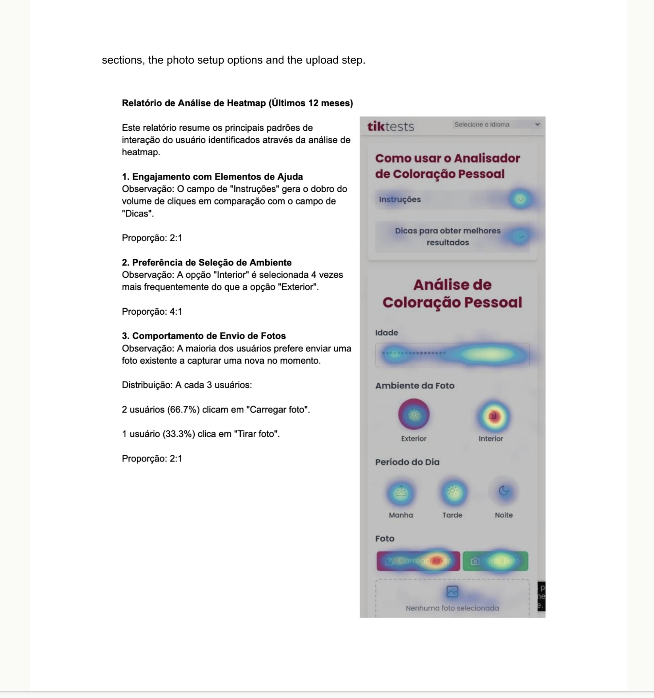
2. In-product experience survey (n=84)
A pop-up on the result page invited every user who completed the colour test to answer, so feedback was captured right after the experience, while it was still fresh. It covered four blocks: current experience, future experience, suggestions and profile.
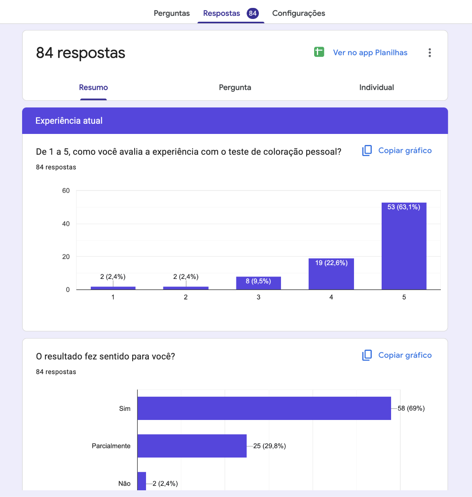
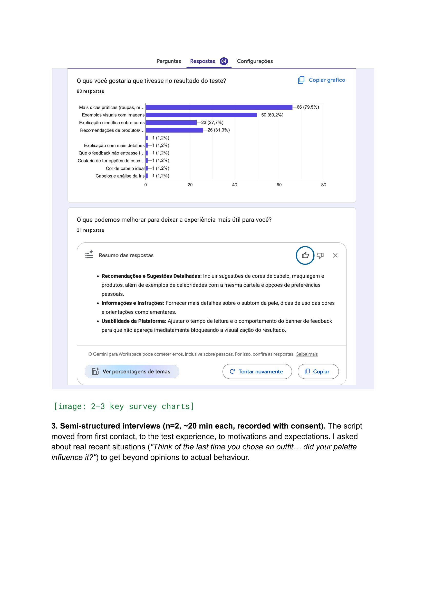
3. Semi-structured interviews (n=2, ~20 min each, recorded with consent)
The script moved from first contact, to the test experience, to motivations and expectations. I asked about real recent situations ("Think of the last time you chose an outfit… did your palette influence it?") to get beyond opinions to actual behaviour.
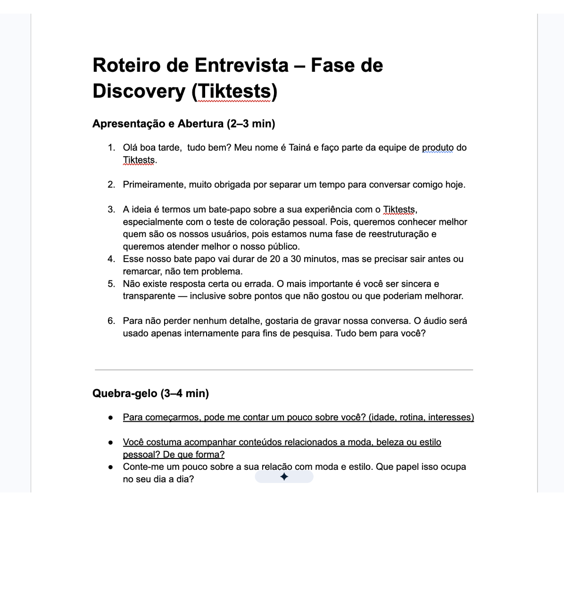
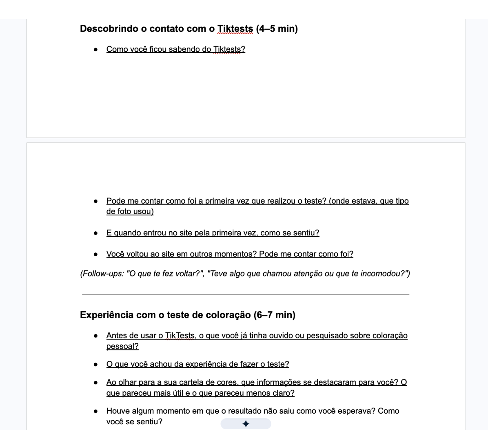
4. Competitive benchmarking of 10 similar products
I captured screenshots of each one, compared their flows and results side by side, and pulled out patterns and ideas worth adapting. The market split into two groups:
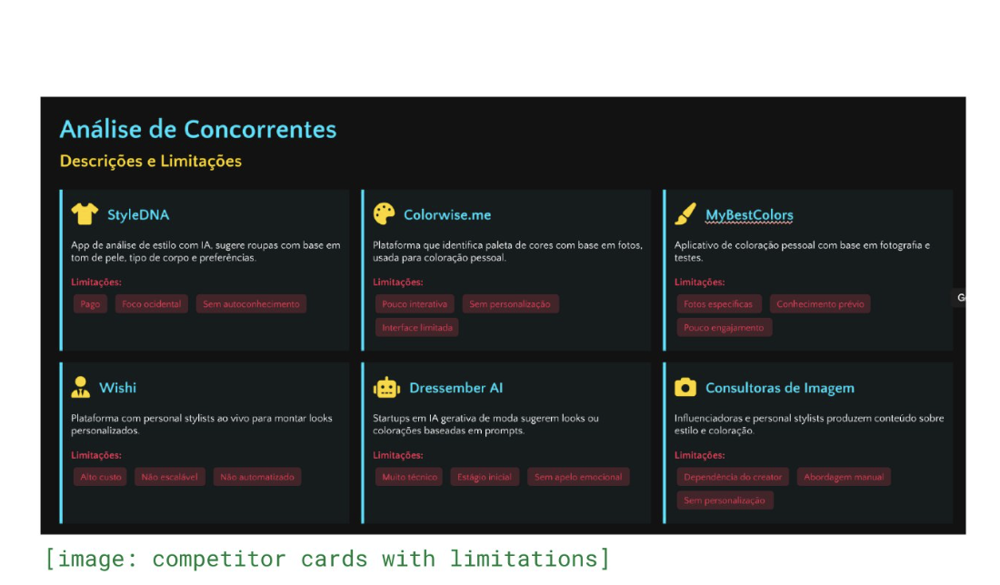
Automated AI tools (e.g. StyleDNA, MyBestColors): scalable, but technical, needing specific photos or prior knowledge, and with little emotional appeal or engagement.
Human experts (e.g. Wishi, image consultants on Instagram/TikTok): personal and engaging, but expensive, manual and hard to scale.
No one combined automated, affordable analysis with a fun, visual and personal experience. That gap became TikTests' positioning.
5. Synthesis
I turned the findings into personas and Value Proposition Canvases, then into the sitemap and flows for the new version.
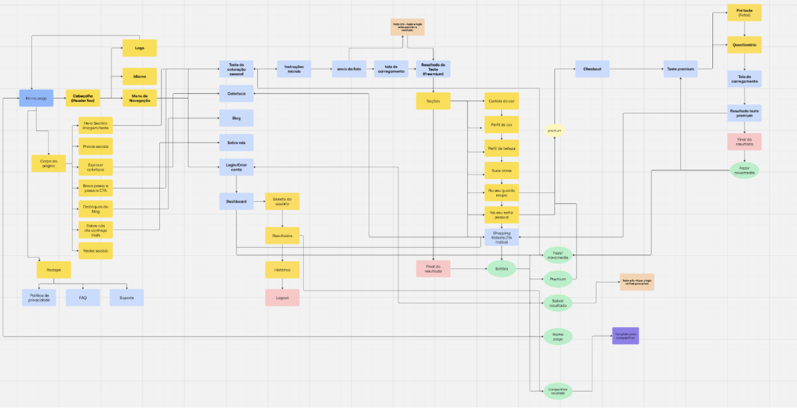
Key findings
1. The test works; the result doesn't go far enough.
86% rated the experience 4–5/5, and 83% found it easy to understand. Speed (65%) and clarity (51%) were what people liked most. But only 69% said the result fully made sense to them, and almost 30% said "partially".
2. People want to know how to use their colours, not just which ones they are.
80% wanted practical tips (clothes, make-up) and 60% wanted visual examples. In interviews, restrictive advice ("avoid pastels") frustrated users, especially when a work dress code forced them to wear colours outside their palette.
"I really liked the result, it was impressive. But I missed something to help me when I need to wear a colour that isn't in my palette, like at events or at work."
3. Low cost brings people in; doubts about accuracy hold them back.
An in-person colour consultation can cost around R$600, and that was a key reason to try a digital test. This matched the benchmarking: affordable options felt cold, and engaging ones were expensive. But users questioned whether a photo-based test could be accurate, especially for very fair skin.
4. Interest in a premium version is high, but willingness to pay is uncertain.
73% were interested in a more detailed result, yet only 38% said they would definitely pay R$20 for it (43% said "maybe").
5. The audience is older than expected.
57% of respondents were 35 or older, so the product could not be designed for Gen Z alone.
6. Our own survey got in the way.
Several users reported that the feedback pop-up appeared over the result before they had finished reading it. The research tool was interrupting the most important moment of the experience.
Personas
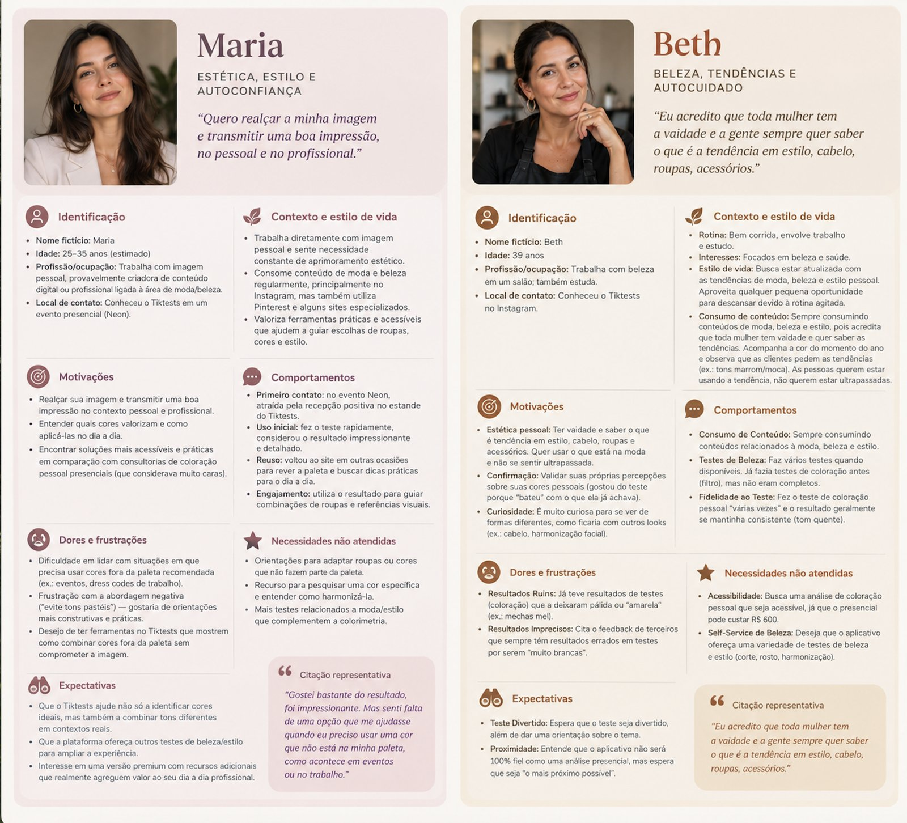
Maria — Gen Z image professional. Works with personal image and creates content. Wants quick, practical answers for real situations (dress codes, social posts) and creative "hacks" rather than rules.
Beth — Millennial beauty professional (39). Works in a salon and studies, with a busy routine. Follows trends, uses tests to confirm her own perceptions, and wants an affordable alternative to in-person consultations that is as close as possible to the real thing.
From insights to decisions
Insight
Decision in the new version
Users want to know how to use their colours
New result sections: In your wardrobe, Your personal style, Your beauty profile
High interest in premium, uncertain payment
Freemium model: full free result, plus an optional premium test with extra photos and a questionnaire
82% wanted style tips on the site
Blog
Personas value shareable, "aesthetic" results
Share template for social media
Survey pop-up blocked the result
Pop-up delayed until the user reaches the end of the result
Who was missing. The pop-up only reached people who finished the test, not those who dropped out. Next time I would add analytics and usability tests at the drop-off points.
Research has a UX cost too. Users' complaints about the pop-up were a reminder that how and when we ask matters as much as what we ask.
Personas need more voices. With two interviews, each persona rests mainly on one person. The survey helped me check them, but qualitative personas usually need at least 5 interviews per user group. They were useful for aligning the team quickly, and the next step would be more interviews to validate and segment them.